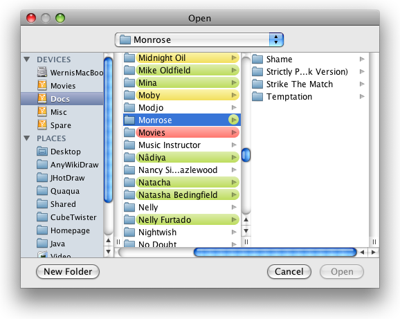
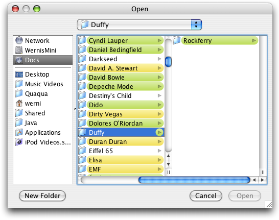
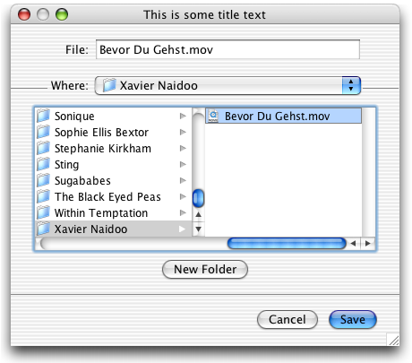

| Property | Type | Notes |
|---|---|---|
Quaqua
|
java.awt.Component |
Values: null or a Component. |
| Property | Type | Notes |
|---|---|---|
Quaqua |
boolean |
Set this to "false" if you experience crashes with QuickLook file previews in the file chooser. |
Sets the component used for rendering the file preview in the last column of the column view in the file browser.
The FileChooserUI of the Quaqua Look and Feel roughly matches the design of native file dialogs on Mac OS X 10.3 through 10.5 (Jaguar, Panther and Leopard).



The design is determined at startup.
You can force a specific style, by setting the system property Quaqua.design to jaguar or
to panther. If
you want Quaqua to determine the design automatically, dont' set this property,
or specify
the value auto.
|
Changing the design like this, will also alter the design of other user interface elements. It is not recommended to use another style than the one used by the operating system. Or else you will see undesired artefacts, because Quaqua does not fully replace all user interface elements of the underlying Aqua Look and Feel by Apple.
You can use class JSheet to display a file chooser as a document modal sheet.
The Panther filechooser supports the following keyboard shortcuts:
| Keystroke | Description |
|---|---|
Shift-Command-A |
Navigates to the applications folder. |
Shift-Command-C |
Navigates to the computer folder. |
Command-Dor |
Navigates to the desktop folder. |
Shift-Command-H |
Navigates to the home folder. |
Shift-Command-K |
Navigates to the network folder. |